도메인 관리 콘솔을 사용하여 연동할 ALTIBASE에 대한 JDBC 데이터 소스를 생성 후 해당 JDBC 데이터 소스를 사용하는 간단한 웹 응용프로그램을 실행하는 전체적인 연동 절차를 설명한다.
JDBC 데이터 소스 생성
ALTIBASE에 대한 JDBC 데이터 소스를 생성하고 해당 JDBC 데이터 소스의 커넥션 풀을 설정하는 절차이다.
참고로 하위 버전에서는 커넥션 풀을 먼저 생성 후 해당 커넥션 풀을 사용할 JDBC 데이터 소스를 생성하는 방식이었으나 상위 버전에서는 JDBC 데이터 소스를 생성하면 자동으로 커넥션 풀이 생성된다.
기본적으로 WebLogic에서 사용할 JDBC 드라이버를 설정하는 방법 을 참조하여 생성할 JDBC 데이터 소스에 대한 JDBC 드라이버 설정이 선행되어 있어야 한다.
JDBC 데이터 소스 생성
로컬에 설치된 ALTIBASE 5에 대한 JDBC 데이터 소스 “altibase”를 생성한다.
1. 도메인의 관리 서버에서 제공하는 관리 콘솔로 접속한다.
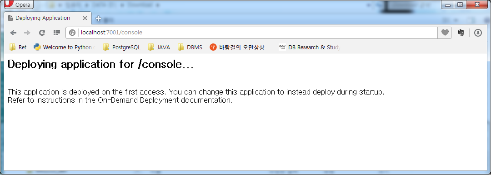
2. 관리 서버의 사용자 이름과 비밀번호와 입력하여 로그인 한다.
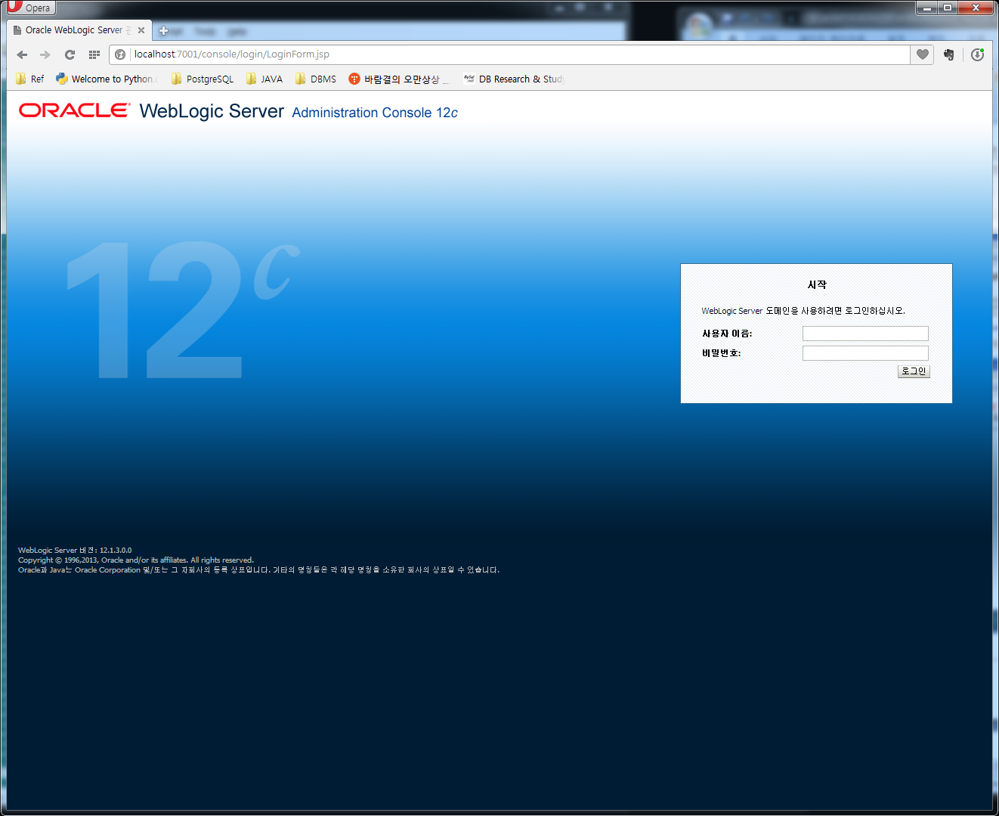
3. 관리 콘솔 메인 페이지에서 “데이터 소스” 항목을 선택한다.
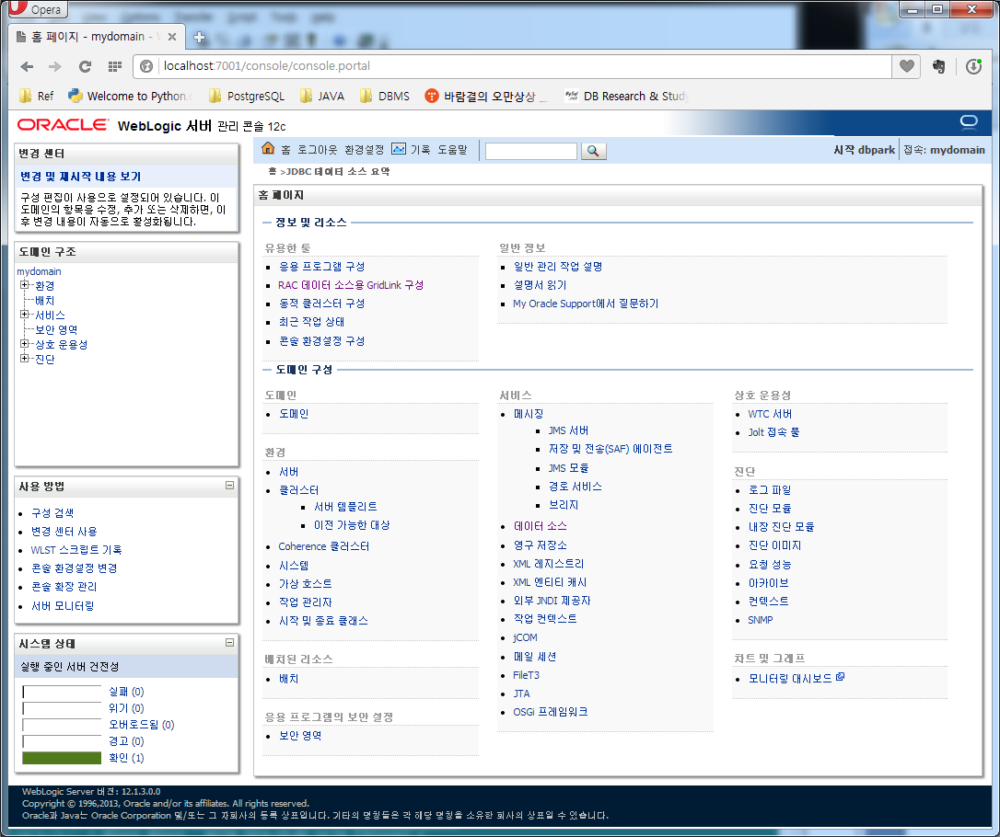
4. [DOCKI:새로 만들기]를 중 일반 데이터 소스를 선택한다.
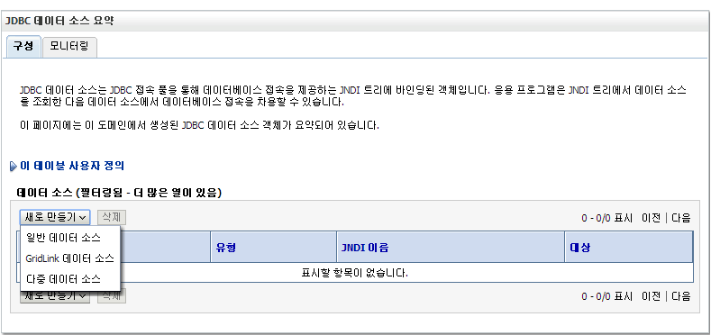
5. JDBC 데이터 소스 속성을 입력 후 다음 단계로 간다.
- JDBC 데이터 소스, JNDI 이름일반적으로 동일하게 한다.
- 데이터베이스 유형[DOCKI:기타]로 선택한다.
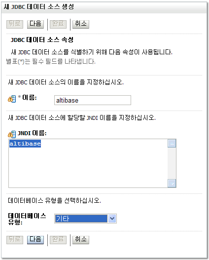
6. 데이터베이스 유형 확인 (기타)
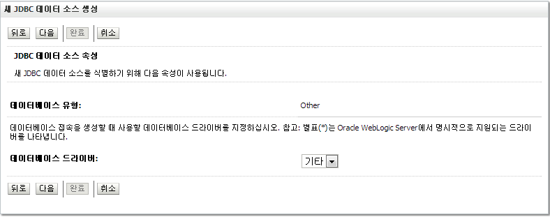
7. 이어지는 “JDBC 데이터 소스 속성” 단계는 생략하고 다음 단계로 간다.
8. “트랜잭션 옵션”을 설정한다. 특별히 설정할 것이 없다면 다음 단계로 간다.
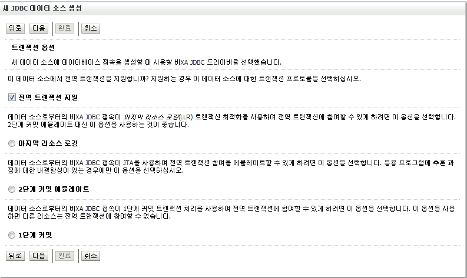
9. 연동할 ALTIBASE의 정보를 입력한다. (sys/manager)
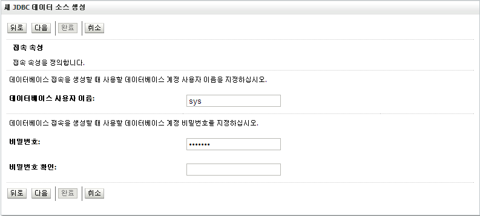
10. ALTIBASE 접속을 위해 커넥션 풀과 관련된 JDBC 정보를 입력한다.
- 드라이버 클래스 이름
Altibase.jar 를 사용하는 경우, Altibase.jdbc.driver.AltibaseDriver
Altibase#.jar 를 사용하는 경우, Altibase#.jdbc.driver.AltibaseDriver
- URL
이전 단계에 입력한 ALTIBASE의 정보를 토대로 접속 URL을 입력한다.
jdbc:Altibase://127.0.0.1:20300/mydb
- 속성
ALTIBASE 4의 경우, “user=sys” 형식으로 접속할 사용자를 입력해야 한다.
ALTIBASE 5, ALTIBASE 6의 경우는 생략해도 무방하다.
- 테스트 테이블
일반적으로 더미(dummy) 테이블인 dual 을 지정한다.
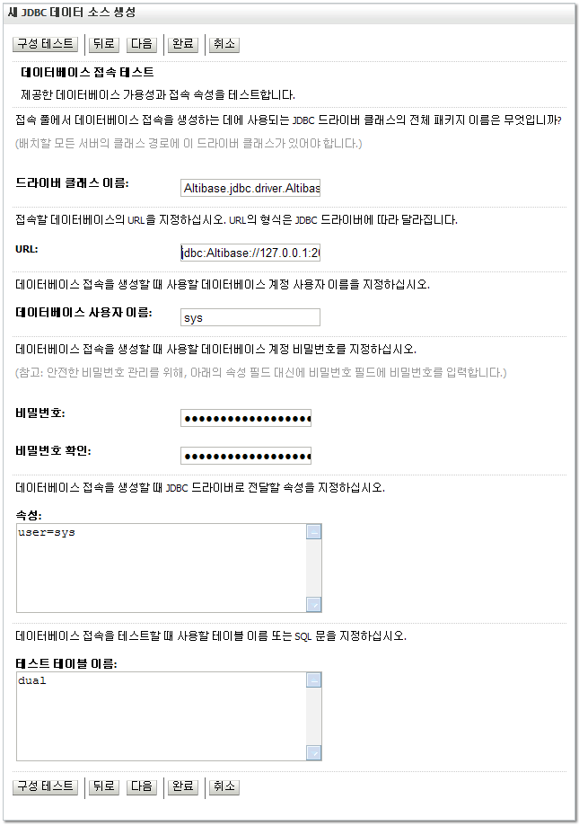
11. [DOCKI:구성 테스트]를 클릭하여 접속 테스트가 성공하면 다음 단계로 넘어간다. 테스트에 실패한 경우 우선적으로 연동 오류 섹션을 참고하도록 한다.
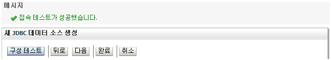
12. JDBC 데이터 소스를 배치할 서버로 관리 서버를 선택 후 [DOCKI:완료]를 선택한다.
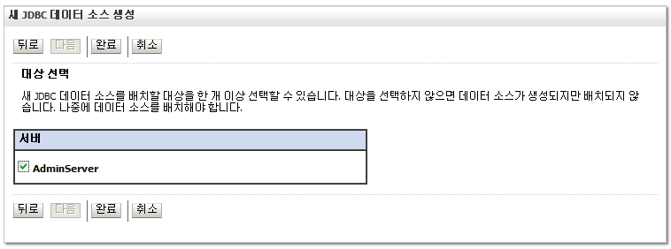
13. JDBC 데이터 소스가 성공적으로 추가된 것을 확인한다.
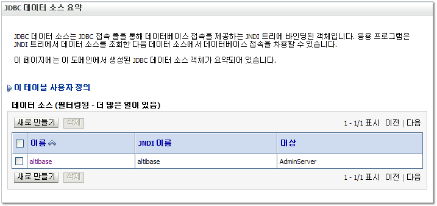
커넥션 풀 설정 변경
JDBC 데이터 소스를 생성하면 관련 커넥션 풀이 함께 생성이 된다. 커넥션 풀은 여러 가지 속성을 가지는데 필요 시 다음 절차를 참고하여 설정을 변경하도록 한다.
예제로 제시된 속성 변경은 필수는 아니나 기본적으로 권장하는 사항이다.
1. 관리 콘솔 메인 화면에서 “데이터 소스” 항목을 선택, 변경하려는 JDBC 데이터 소스를 선택 후 [DOCKI:구성] 탭의 [DOCKI:접속 풀] 탭을 선택한다.
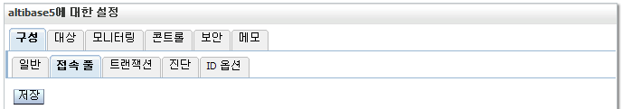
2. 아래 속성을 적절히 변경 후 [DOCKI:저장]을 선택한다.
- 초기 용량 (Initial Capacity)
기본적인 커넥션 풀의 개수로 기본값이 1이나 업무 부하를 고려하여 이보다는 큰 수치를 권장한다.
확인
JDBC 데이터 소스 생성의 성공 여부를 최종적으로 확인한다.
- WebLogic 에서의 확인
관리 콘솔 메인 화면에서 “데이터 소스” 항목을 선택, 확인하려는 JDBC 데이터 소스를 클릭 후 [DOCKI:모니터링] 탭의 [DOCKI:테스팅] 탭에서 접속 성공 여부를 확인한다. 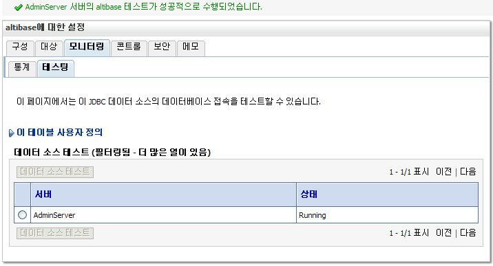
- ALTIBASE 에서의 확인
JDBC 데이터 소스의 접속 대상 ALTIBASE에서 세션 관련 쿼리를 수행, 설정한 커넥션 풀의 초기 용량만큼 세션이 존재하는지 확인한다.
아래는 초기 용량을 10으로 지정한 경우의 실행 결과이다. JDBC 타입의 세션이 10개인 것을 확인할 수 있다.
CMD> isql -s 127.0.0.1 -u sys -p manager -port 20300 |
웹 응용프로그램 생성 및 배치
연동을 위한 간략한 웹 응용프로그램을 생성하고 배치하는 예제이다.
웹 응용프로그램 생성
이름은 sample, 기본 페이지는 welcome.html 인 웹 응용프로그램을 생성한다.
1. 웹 응용프로그램의 이름으로 디렉토리를 생성 후 하위 디렉토리로 “WEB-INF” 를 생성한다.
2. WEB-INF 디렉토리에 아래 내용으로 web.xml 파일을 생성한다.
<?xml version="1.0" encoding="UTF-8"?> <!DOCTYPE web-app PUBLIC "-//Sun Microsystems, Inc.//DTD Web Application 2.3//EN" "http://java.sun.com/dtd/web-app_2_3.dtd"> <web-app> <welcome-file-list> <welcome-file>welcome.html</welcome-file> </welcome-file-list> </web-app>
배치
관리 콘솔에서 제공하는 배치 메뉴를 통하여 수동으로 직접 배치하여도 되나 편의상 개발 모드로 설치하였을 때 제공되는 $DOMAIN_HOME/autodeploy 를 통한 자동 배치를 활용한다.
1. 생성한 웹 응용프로그램 디렉토리 전체를 $DOMAIN_HOME/autodeploy 밑으로 위치 시킨다. 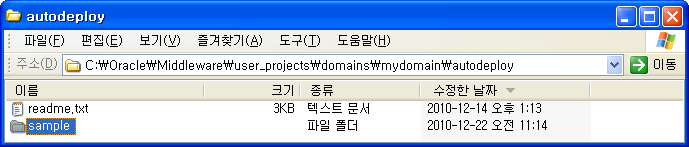
2. 관리 콘솔 메인 페이지 좌측에 “배치” 메뉴를 선택하여 자동배치 여부를 확인한다.
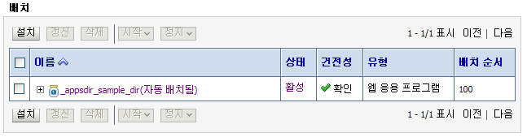
확인
웹 응용프로그램의 기본 페이지 예제를 통해 배치의 성공 여부를 최종적으로 확인한다.
- sample 디렉토리에 아래 내용으로 welcome.html 를 생성한다.
<head><title>Welcome Page</title></head> <body>welcome!!</body> </html>
- 생성한 페이지에 접근하여 출력결과를 확인한다.
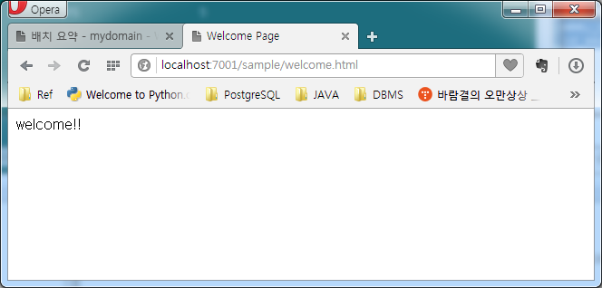
연동 예제
JDBC 데이터 소스의 JNDI를 통하여 ALTIBASE에 접속하는 예제를 수행함으로 ALTIBASE와 연동이 성공적으로 되었는지 최종적으로 확인한다.
ALTIBASE 연동
ALTIBASE 와 연동하는 웹 응용프로그램을 작성하여 접속 정보를 확인한다.
1. sample 디렉토리에 아래 내용으로 singleVersion.jsp 를 생성한다.
<%@ page contentType="text/html;charset=euc-kr" pageEncoding="euc-kr"%>
<%@ page import="java.sql.*, javax.naming.*, javax.sql.*"%>
<head><title>Single Version Test Page</title></head>
<body>
<%
Context initCtx = new InitialContext();
DataSource ds = (DataSource)initCtx.lookup("altibase");
Connection sCon = ds.getConnection();
Statement sStmt = sCon.createStatement();
String query = "select '" +
"<b>DB name: </b>'||trim(db_name)||'<br>" +
"<b>version: </b>'||trim(product_signature)||'<br>" +
"<b>Current Time: </b>'"+
"||to_char(sysdate,'yyyy/mm/dd hh24:mi:ss')||'<hr>'" +
" from v$database;";
ResultSet sRes = sStmt.executeQuery(query);
sRes.next();
out.println("<font size=4><b>ALTIBASE Connection Info</b></font><p>");
out.println(sRes.getString(1));
sRes.close();
sStmt.close();
sCon.close();
%>
</body>
</html>
2. 생성한 페이지로 접근하여 연동 대상 ALTIBASE의 정보가 이상 없이 출력되는지 확인한다.
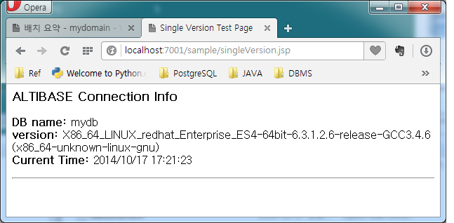
서로 다른 버전의 ALTIBASE 연동
ALTIBASE 와 ALTIBASE 5와 동시에 연동하는 웹 응용프로그램을 작성하여 접속 정보를 확인한다.
1. WebLogic에서 사용할 JDBC 드라이버를 설정하는 방법 를 참조하여 ALTIBASE, ALTIBASE 5, ALTIBASE 6 각각에 대한 JDBC 드라이버 파일을 WebLogic에서 사용할 수 있도록 사전에 설정한다.
( ALTIBASE JDBC 는 해당 버전에서의 패키지에서 이름만 다른 JDBC 드라이버를 제공하고 있다. 이는 상위버전 혹은 하위 버전에서 복사해서 사용하기 편하도록 준비해 둔 것이다. 즉, HDB 5버전과 6버전을 동시에 사용하려면, 해당 이름 변경 버전을 가져다 사용하면 된다.
* HDB 패키지에서 제공되는 두 개의 드라이버는 이름만 다를 뿐 같은 드라이버이다.
HDB 버전 |
ALTIBASE 5 |
ALTIBASE 6 |
ALTIBASE 7 |
현재 패키지 버전 |
Altibase.jar |
Altibase.jar |
Altibase.jar |
호환성을 위한 |
Altibase5.jar |
Altibase6.jar |
Altibase7.jar |
)
2. 각각에 대한 JDBC 데이터 소스를 생성한다. (JNDI는 JDBC 데이터 소스 이름과 같게 한다.)
- Altibase.jar를 사용하는 ALTIBASE 에 대한 JDBC 데이터 소스 altibase
(드라이버 클래스 이름: Altibase.jdbc.driver.AltibaseDriver)
- Altibase5.jar를 사용하는 ALTIBASE 5 에 대한 JDBC 데이터 소스 altibase5
(드라이버 클래스 이름: Altibase5.jdbc.driver.AltibaseDriver )
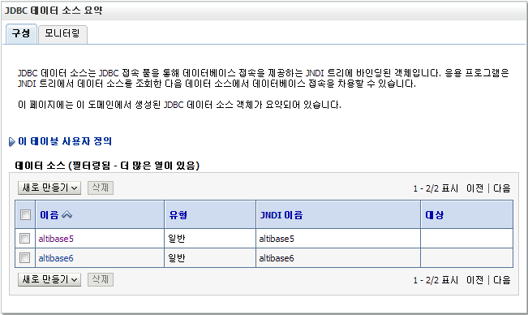
3. sample 디렉토리에 아래 내용으로 multiVersion.jsp 를 생성한다.
<%@ page contentType="text/html;charset=euc-kr" pageEncoding="euc-kr"%>
<%@ page import="java.sql.*, javax.naming.*, javax.sql.*"%>
<head><title>Multi Version Test Page</title></head>
<body>
<%
Context initCtx = new InitialContext();
DataSource ds1 = (DataSource)initCtx.lookup("altibase5");
DataSource ds2 = (DataSource)initCtx.lookup("altibase6");
Connection sCon1 = ds1.getConnection();
Connection sCon2 = ds2.getConnection();
Statement sStmt1 = sCon1.createStatement();
Statement sStmt2 = sCon2.createStatement();
String query = "select '" +
"<b>DB name: </b>'||trim(db_name)||'<br>" +
"<b>version: </b>'||trim(product_signature)||'<br>" +
"<b>Current Time: </b>'"+
"||to_char(sysdate,'yyyy/mm/dd hh24:mi:ss')||'<hr>'" +
" from v$database;";
ResultSet sRes1 = sStmt1.executeQuery(query);
ResultSet sRes2 = sStmt2.executeQuery(query);
sRes1.next();
sRes2.next();
out.println("<font size=4><b>First ALTIBASE Connection Info.");
out.println("</font></b><p>"+sRes1.getString(1));
out.println("<font size=4><b>Second ALTIBASE Connection Info.");
out.println("</font></b><p>"+sRes2.getString(1));
sRes1.close();
sRes2.close();
sStmt1.close();
sStmt2.close();
sCon1.close();
sCon2.close();
%>
</body>
</html>
4. 생성한 페이지로 접근하여 연동 대상 ALTIBASE의 정보가 이상 없이 출력되는지 확인한다.
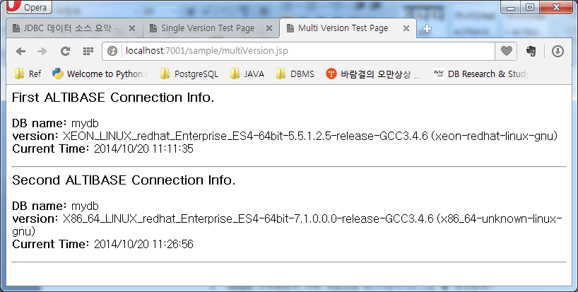
{kind=link}
{kind=link}
{kind=link}
{kind=link}
{kind=link}
{kind=link}
{kind=link}
{kind=link}
{kind=link}
{kind=link}
{kind=link}
{kind=link}
{kind=link}
{kind=link}
{kind=link}
{kind=link}
{kind=link}
{kind=link}
{kind=link}
{kind=link}
{kind=link}
{kind=link}